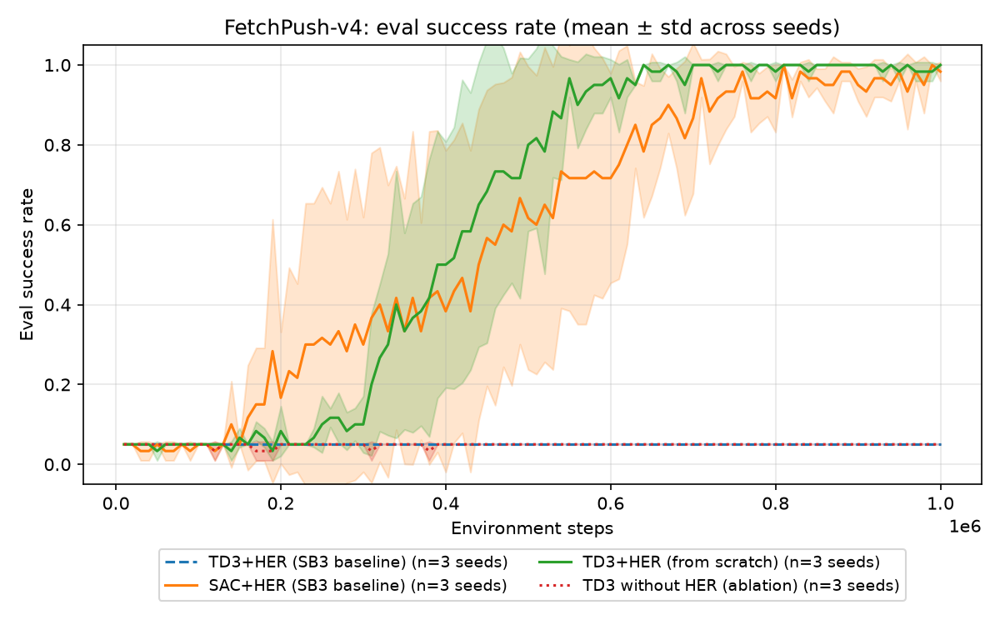
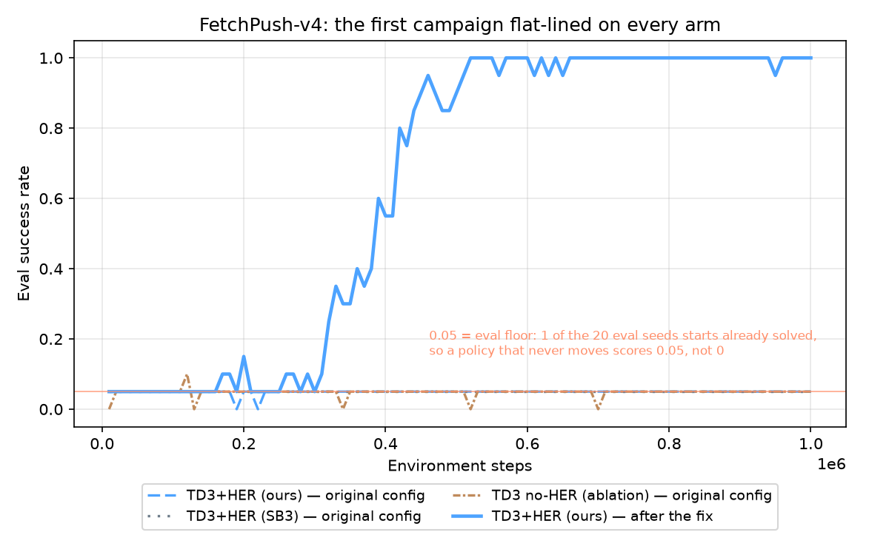

LaunchPad 2026 — Griffin Labs RL-From-Scratch track. ≤4 pages.
Contact-rich tabletop manipulation with sparse rewards: a 7-DoF Fetch
arm must push a block to a commanded 3-D goal (FetchPush-v4, stock task,
no modifications), reward −1 every step until the block is within 5 cm of
the goal, then 0. This is where scripted automation breaks — a
pre-programmed push assumes fixed block and goal poses, and any
perturbation invalidates the contact schedule. A policy must perceive the
current configuration and re-plan the contact through it.
Why the obvious approaches fall short: scripted control computes waypoints that don't react to randomized block and goal poses; dense-reward RL needs per-task hand-shaping, a known reward-hacking source; vanilla off-policy RL almost never sees a success and cannot bootstrap value — our no-HER ablation quantifies that.
Success criteria, fixed before building: (a) match the SB3 baseline's mean±std band at 1M env steps over 3 seeds × 50 fixed eval episodes; (b) the no-HER ablation clearly underperforms; (c) a judge reproduces our eval from a clean clone in under 15 minutes.
Algorithm: TD3 + Hindsight Experience Replay, written from scratch in
PyTorch (src/agent/, ~680 lines). Training loop, replay buffer, HER
relabeling, networks, normalizer, and update rule are all ours; the only
imports are torch, numpy, gymnasium/gymnasium-robotics, yaml
and the standard library, so autograd, Adam and the simulator are the
entire extent of the library code (per R1).
┌─────────────────────────────┐
obs(10) ┐ │ Actor: 13 → 256 → 256 → 4 │ → tanh·max_action → a
goal(3) ┴ s(13) ──▶├─────────────────────────────┤
│ Critic₁: 13+4 → 256 → 256 →1│ ┐
│ Critic₂: 13+4 → 256 → 256 →1│ ┴→ min(Q₁,Q₂) targets
└─────────────────────────────┘
(+ Polyak target copies of all three, τ=0.05 — not the SB3 default
0.005, see below; running obs-normalization sits in front of s)
Each major decision, with the alternative we ruled out:
| Decision | Why | Rejected alternative & its shortcoming |
|---|---|---|
| Off-policy + HER | Sparse goal-conditioned reward: relabeling failed episodes with achieved goals is the only signal source | PPO (on-policy): cannot reuse relabeled experience; dense shaping: reward engineering we'd have to defend per-task |
| TD3 over SAC | Fewer moving parts under a deadline; deterministic eval | SAC: one more tunable (entropy temperature), stochastic eval adds R4 variance. In hindsight, the costly choice — a deterministic actor is what saturates under sparse reward, and SAC's entropy bonus is structurally immune, which is why it needs no random_eps (§5). |
HER future, k=4 |
Relabels 80% of sampled transitions from later same-episode states; the paper's strategy | final: fewer distinct goals per episode, weak coverage near trajectory ends |
| MLP 256-256, relabel at sample time | State is 13-D — capacity isn't the bottleneck, stability is; sampling fresh counterfactual goals each epoch beats freezing k copies at store time (k× memory) | Deeper/wider nets: slower, no gain at this input size |
| 1 grad step per env step | Matches SB3's throughput → fair same-x-axis comparison | Higher ratios: better sample efficiency, but confounds R2 |
Not built, deliberately: distributional critics, prioritized replay, parallel envs — the baseline comparison, not peak performance, is the claim.
Hyperparameters, and where we deviate. We started from SB3's published
tuned Fetch values; that configuration did not learn (§5). The reported
runs deviate in five places (diff generated from the two committed configs
into results/config_diff.md):
| Key | Failed | Reported | Why |
|---|---|---|---|
tau |
0.005 | 0.05 | 10× faster target tracking; slow targets let a saturated actor's value estimates stay self-consistent |
action_l2 |
— | 1.0 | penalizes squared action magnitude; intended as anti-saturation, but §5 finds no individual effect |
normalize_obs |
— | true | Fetch positions and velocities differ by ~2 orders of magnitude; §5 finds no individual effect (n=3) |
expl_noise |
0.1 | 0.2 | wider Gaussian exploration |
random_eps |
— | 0.3 | 30% fully-random actions, sustained — the one change §5's ablation shows is necessary |
γ=0.95, lr=1e-3, batch 256, buffer 1e6, network width, policy delay and
target-noise clipping are unchanged from SB3. Every reported from-scratch
run — three FetchPush seeds, the no-HER ablation, PickAndPlace — uses this
identical config; nothing was tuned per task or per seed. The SB3 TD3+HER
baseline was given two of the five — tau and expl_noise, the only two
it exposes — so it differs from us in exactly the three with no SB3
equivalent; §3 covers what that does and does not license us to conclude.
All numbers regenerate from committed CSVs via scripts/make_plots.py;
eval protocol: deterministic policy, 50 episodes, eval seeds 10000–10049,
disjoint from all training seeds (R4). We score checkpoint_best, selected
on in-training eval, and checked that against a disjoint seed block —
PickAndPlace seed 0 scores 0.740 on both 10000+ and 20000+, so no selection
leakage. Best-vs-final costs it 0.740 vs 0.68, and nothing on FetchPush.
Correctness gate (FetchReach): solved from 7.5k env steps, 1.9 min on laptop CPU. The same checkpoint scores 0.98 on the 50-episode R4 protocol against 1.00 on the 10-episode in-training one — a live demonstration of why R4 mandates ≥50 episodes.
Classical baseline (scripted two-phase push controller,
scripts/diagnose_push.py): 54% on the identical protocol — the simple
controller bar, failing where open-loop scripting should, on goals needing
re-approach after overshoot.
FetchPush, 3 seeds × 1M steps, on the R4 protocol
(results/final_eval_push.md; 0.040 is the floor — 2 of the 50 eval seeds
start inside the 5 cm threshold, as does 1 of 20 in-training, hence 0.05 in
the figures):
| Arm | Success (mean ± std) | Per-seed |
|---|---|---|
| TD3+HER (from scratch) | 0.993 ± 0.009 | 1.00, 1.00, 0.98 |
| SAC+HER (SB3 baseline) | 0.993 ± 0.009 | 1.00, 0.98, 1.00 |
| TD3+HER (SB3 baseline) | 0.040 ± 0.000 | 0.04, 0.04, 0.04 |
| TD3 no-HER (our ablation) | 0.040 ± 0.000 | 0.04, 0.04, 0.04 |
| Scripted classical controller | 0.54 | deterministic |
Four results, each load-bearing:
her_k=0 and never leaves the floor — object contact in ≤7% of
episodes (0.07/0.04/0.04) versus 0.95 on every HER seed. Visible in the
logged contact_frac, not inferred.results/archive_broken_config/). We diagnosed the
mechanism in our own code, where we could instrument it: the actor had
saturated, mean |action| = 1.0, tanh gradients dead.That arm is a failed baseline configuration, not an ablation of our additions, and the ~20× gap against it is not evidence that our implementation beats TD3+HER as published. Our fair comparison is SAC+HER, which we match; reporting the gap as a win would be the easiest way to mislead a reader here.
We tested the obvious follow-up, and it failed. If ε-random is the one
setting whose removal collapses us, does adding it to SB3's TD3 rescue it?
We built exactly that — one mechanism added, everything else at SB3's
settings — and the answer is no: all three seeds sit at the floor for 1M
steps and never leave it (results/sb3_eps_experiment.md). ε-random is
necessary for us but not sufficient for SB3, so the gap is not solely the
exploration schedule, and we do not know what else it is. Since an inactive
override would produce the same flat curve, we measured it firing inside
SB3's loop (0.302 vs 0.300 configured) and pinned that with a test.
Beyond the protocol: 599/600 held-out non-eval initial states solved across the three seeds — one failure total, dissected in §5.
Robustness to dynamics never trained on (results/dynamics_sweep.md;
stock-dynamics training, no randomization, so this is unaided). Re-running
the R4 protocol under perturbed block physics shows a sharp asymmetry.
Friction is nearly free — ×0.1 to ×1 leaves 0.993 untouched, ×4 costs 0.09.
Mass is one-sided: 8× heavier still scores 0.987, while lighter degrades
monotonically (×0.5 → 0.867, ×0.3 → 0.240, ×0.2 → 0.073). The policy learned
a push impulse calibrated to the nominal mass, and too much of it sends a
light block past the goal — an overshoot failure, mechanically opposite to
the seed-2081 case in §5. Stretch
task — FetchPickAndPlace, same config, zero re-tuning: 0.740 ± 0.082
over 3 seeds × 50 episodes (0.74/0.84/0.64; grasping and in-air goals, so no
pushing shortcut exists). One config transferring across two contact tasks
is evidence the recipe, not per-task tuning, is doing the work — though the
±0.08 spread is three times FetchPush's, so the transfer is real but
markedly less stable than the primary task.

Reading the curves. Both working arms sit at the floor while the buffer fills with relabeled failures, then rise sharply once HER has enough near-goal experience to bootstrap from. Our mean curve reaches every threshold above 0.5 first, but we do not claim a sample-efficiency win — per-seed steps to a durable 0.9 (reached, never falling below 0.8) don't support it:
| Arm | seed 0 | seed 1 | seed 2 | spread |
|---|---|---|---|---|
| TD3+HER (ours) | 450k | 410k | 600k | 190k |
| SAC+HER (SB3) | 380k | 760k | 650k | 380k |
SAC's fastest seed beats our fastest; our better mean rides on its one slow seed, and the gap between means is smaller than either arm's own spread. We match SAC+HER on final success and sample efficiency alike — n=3 cannot resolve a difference this size. One qualitative difference is real: SAC leaves the floor earlier (~150k vs ~250k) but climbs more gradually, crossing us near 400k — entropy-driven exploration versus a deterministic actor that needs its first successes before it commits.
results/compute_table.md. Two honest
notes. The laptop core is ~3× faster than the cluster's older Xeons, so
cross-hardware times are not comparable — env steps are the shared axis.
And ours is the cheapest arm per env step (one deterministic actor, two
critics; SAC also back-props a stochastic policy and tunes a temperature)
— a consequence of the algorithm choice, not something we optimized for.Known failure modes. Across 600 held-out initial states (env seeds
2000–2199 against all three policies, disjoint from training and R4 eval
seeds) there is exactly one failure: seed 0 on state 2081
(results/push_failure_seed2081.mp4; sweep in results/failure_sweep.md).
The mechanism is contact without sustained pushing, not overshoot: the gripper reaches the block (closest approach 0.043 m) then delivers 17% of the required displacement, 0.298 m → 0.248 m against a 0.05 m threshold, never pushing it past the goal. Running every state against every seed tells us what one seed could not — seeds 1 and 2 both solve state 2081, and every other state needing >0.25 m succeeds on every seed. So it is neither an intrinsically hard state nor a push-distance limit; it is a property of seed 0's policy. We localize it that far and, from one instance, decline to invent a cause.
Negative results (found the hard way, diagnosed systematically): Our first full FetchPush campaign — from-scratch TD3+HER, an SB3 TD3+HER baseline, and a no-HER ablation, 1M env steps each — all flat-lined at the eval floor (one eval seed starts in a success state; success = 0.05 throughout). Pre-declared probes: (1) a scripted controller solves the task, so the env is fine; (2) the behavior policy moved the block in 2% of episodes; (3) the trained actor had saturated — mean |action| = 1.0, gripper pinned ~1.6 m from the block, tanh gradients dead. Sustained ε-random exploration alone did not fix it (block moved in 0/50 episodes — a collapsed policy acts as a restoring force against per-step random actions).

That diagnosis shaped the final design (§2) — and we then ablated it, one
setting at a time (results/stabilizer_ablation.md). Exactly one of the
five is necessary. Reverting random_eps puts the run back on the floor
for all 1M steps at 4% object contact, on all three seeds: the original
failure reproduced by a one-line change. The other four are individually
removable — each lands inside the reported config's own three-seed spread
(410–600k steps to a durable 0.9).
One of those four is worth recounting. On seed 0, dropping observation normalization cost 910k steps — a clean 2× penalty, and what we first wrote down. Seeds 1 and 2 came back at 470k and 360k, inside the band and one faster than any reported seed, so we withdrew the claim. The number that suited us was the one that did not survive.
Necessary is not sufficient: adding ε-random mixing to the broken config did not rescue it either (block moved in 0/50). It is required, and needs at least one of the others with it. The honest reading is that we over-corrected — five changes where the evidence supports one. We report that rather than present the package as if it had been tuned. The three arms still at n=1 can identify a collapse but not a small regression. The failed runs stay committed, and every figure regenerates from their CSVs.
With two more weeks: three seeds on each remaining ablation arm; training with domain randomization, which §3's sweep says would pay off only at low mass; and a vision-from-pixels variant, swapping the 13-D state for a CNN encoder behind the same TD3+HER core, toward Griffin's VLA-style perception stack.
Pinned deps (uv.lock), seeded configs, judge path in README; src/agent/
(ours) is fully separated from src/baseline/ (SB3). Any of us can walk
through the loss function or any architecture decision live (R1).